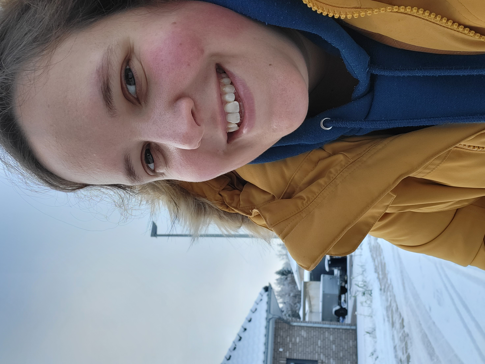
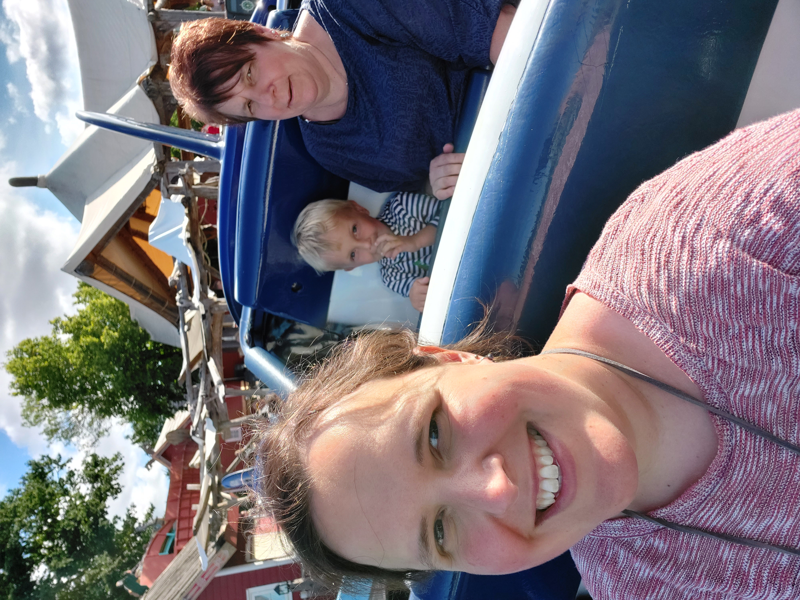

| Das bin ich | |
|---|---|
| Name: | Jessica Sen |
| Geburtsdatum: | 31.02.1989 |
| Geburtsort: | Beispielstadt |
| Anschrift: | Beispielstraße 2 12345 Neustadt |
| Hobbies: |
|



| Das bin ich | |
|---|---|
| Name: | Jessica Sen |
| Geburtsdatum: | 31.02.1989 |
| Geburtsort: | Beispielstadt |
| Anschrift: | Beispielstraße 2 12345 Neustadt |
| Hobbies: |
|
Seit einiger Zeit interessiere ich mich für Softwareentwicklung. Erste Kontakte dazu hatte ich in meinem Physikstudium durch Matlab, Python, und etwas FORTRAN – danach war das Thema für eine Weile eingeschlafen.
In diesem Jahr habe ich angefangen, mir selbst über ein paar kleine Onlinekurse in der App Mimo HTML und CSS beizubringen, um dann später auch in JavaScript einzusteigen. Als ich dann die Plakate von opencampus sah, fühlte ich mich direkt angesprochen: Ein richtiger Kurs mit Begleitung in einer Gruppe sind genau die richtige Lernumgebung für mich.
Aktuell bin ich noch Hausfrau. Da mein Sohn nun drei Jahre alt ist und seit August den Kindergarten besucht, möchte ich nun wieder in das Arbeitsleben einsteigen. Das “Frontend Developer”-Programm bietet mir hier eine optimale Perspektive. Da ich momentan nicht berufstätig bin, habe ich viel Zeit und Motivation mich mit den Inhalten und Herausforderungen des Kurses auseinanderzusetzen.
Ich bin stark am Thema Webentwicklung interessiert und habe durch meinen Mann, der in der Branche tätig ist, bereits ein paar Einblicke in den Bereich. Besonders schätze ich an diesem Beruf die Mischung aus technischen und gestalterischen Aufgaben, die das Feld abwechslungsreich gestalten.
Ich sehe das Programm als große Chance für einen anschließenden Berufseinstieg in die digitale Branche.